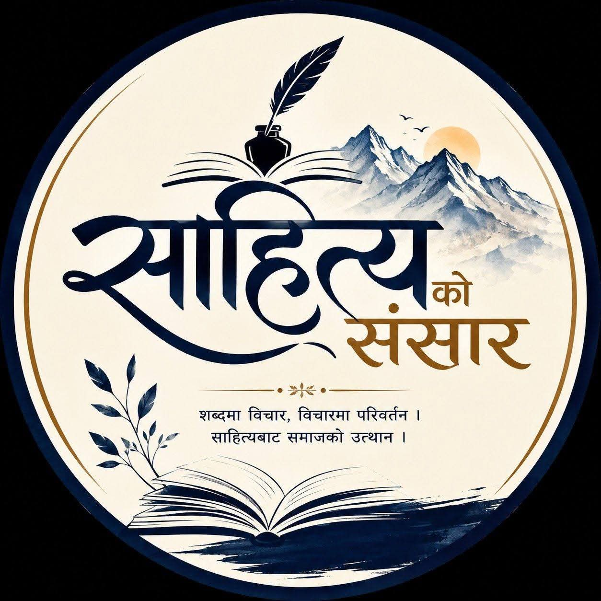

"शब्दमा विचार, विचारमा परिवर्तन
साहित्यबाट समाजको उत्थान"
साहित्यिक पत्रीका
अक्षर स्पर्श एक नेपाली साहित्यिक पत्रिका हो, जहाँ
विभिन्न साहित्यकारहरूका गजल, कविता र मुक्तकहरू सङ्कलित छन्।
यहाँ तपाईंले साहित्यकारका रचना, परिचय र योगदान एकै ठाउँमा पढ्न सक्नुहुनेछ।
“शब्दहरूले हृदय बोल्छन्, साहित्यले आत्मा छुन्छ।”